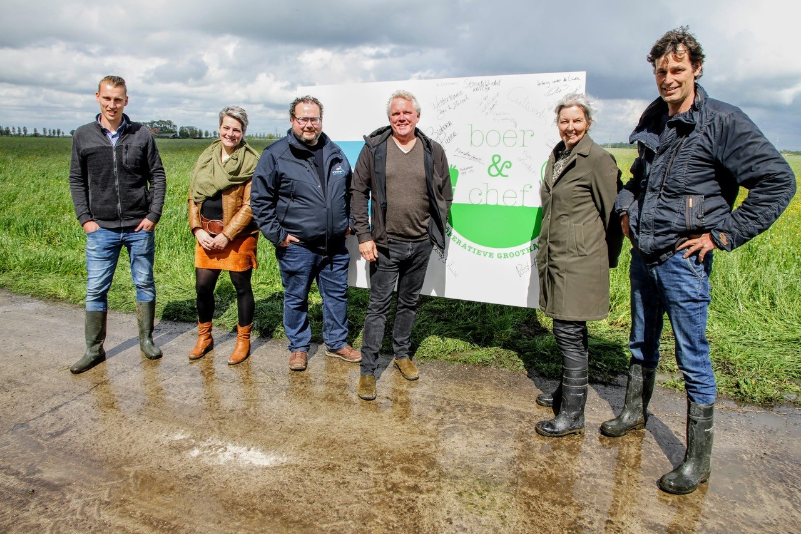
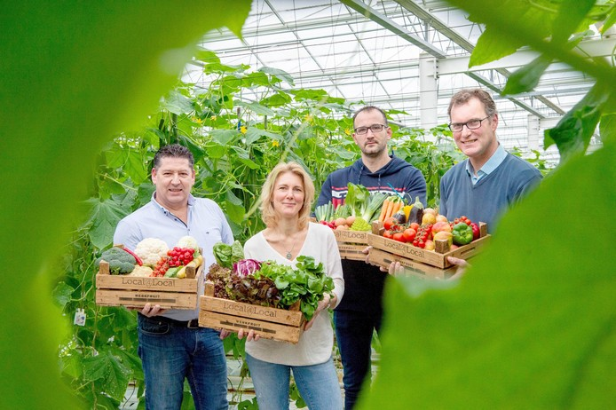
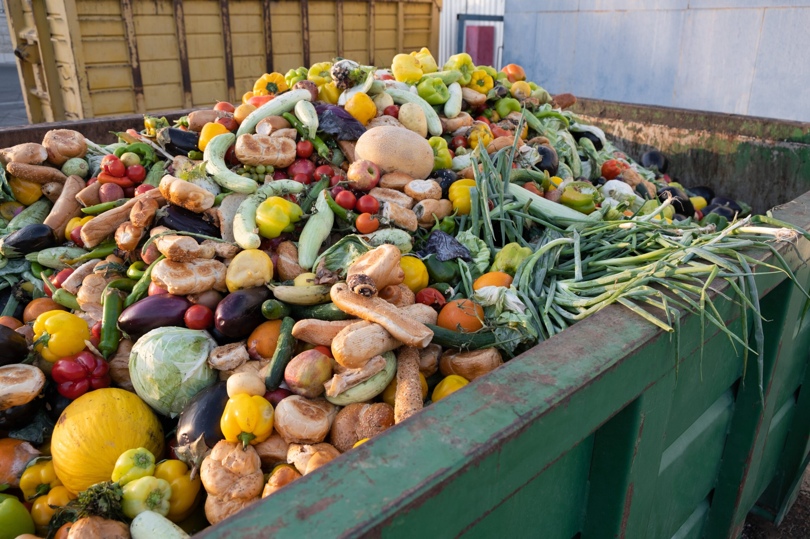

Hoe kan regionaal voedsel meer afnemers bereiken?
In Land van Cuijk, Gennep en Bergen wordt allerlei voedsel geproduceerd. Toch komt dit voedsel niet vanzelf terecht bij ziekenhuizen, zorginstellingen en andere grote afnemers.
Hoe kunnen producenten en afnemers elkaar beter vinden en wat is daarvoor nodig?
Waar liggen de kansen voor voedselproducenten?

Samenwerking tussen regionale boeren
Boerenbedrijven kunnen ervoor kiezen om samen te werken en een boeren-netwerk te vormen. Zo kunnen ze hun producten bundelen en samen een groter en gevarieerder aanbod leveren aan afnemers. Ook kunnen er onderlinge afspraken gemaakt worden over bijvoorbeeld gezamenlijke opslaglocaties of transport.

Producenten en afnemers verbinden.
Door producenten en afnemers met elkaar in contact te brengen kunnen vraag en aanbod beter op elkaar worden afgestemd. Denk bijvoorbeeld aan:
- Een overzicht van regionale producenten en hun producten. Zodat afnemers makkelijk kunnen vinden welke producten er in de regio geproduceerd worden.
- Afspraken tussen boeren en afnemers over wie welke producten kan leveren en in welke hoeveelheid.
- Een gezamelijk bestelsysteem waarin afnemers producten van verschillende regionale boeren kunnen bestellen.

Voedselverspilling verminderen
Soms blijft er voedsel over omdat er meer is geproduceerd dan verkocht kan worden, of omdat producten niet aan de eisen van supermarkten voldoen.
Door deze producten aan andere afnemers te leveren of te verwerken tot bijvoorbeeld soep of saus, kan worden voorkomen dat goed voedsel wordt weggegooid.